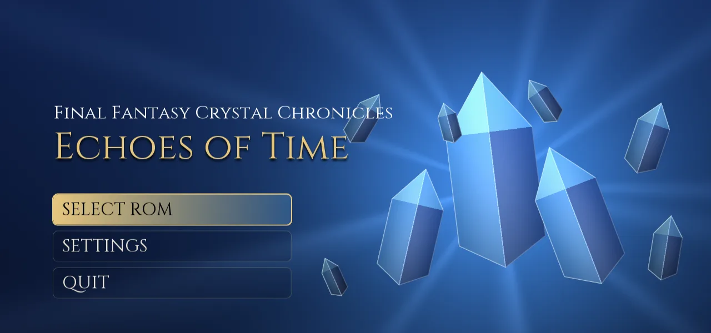
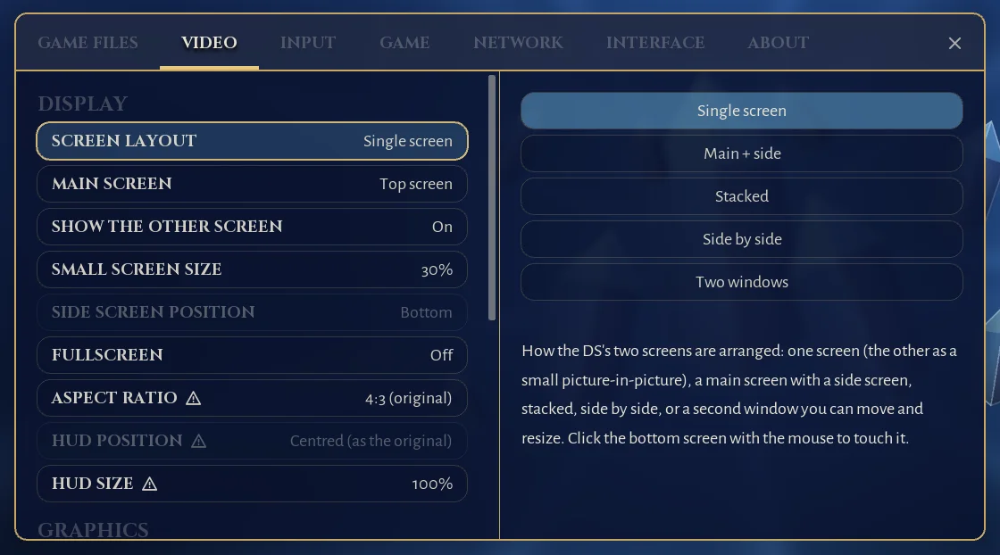
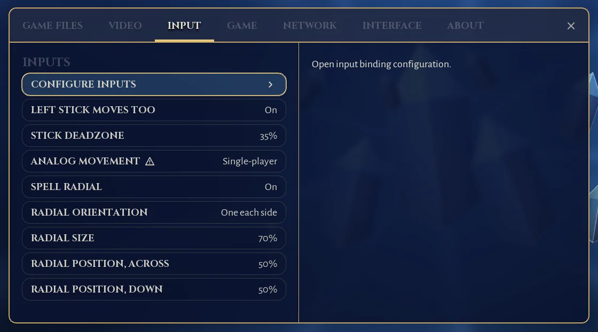
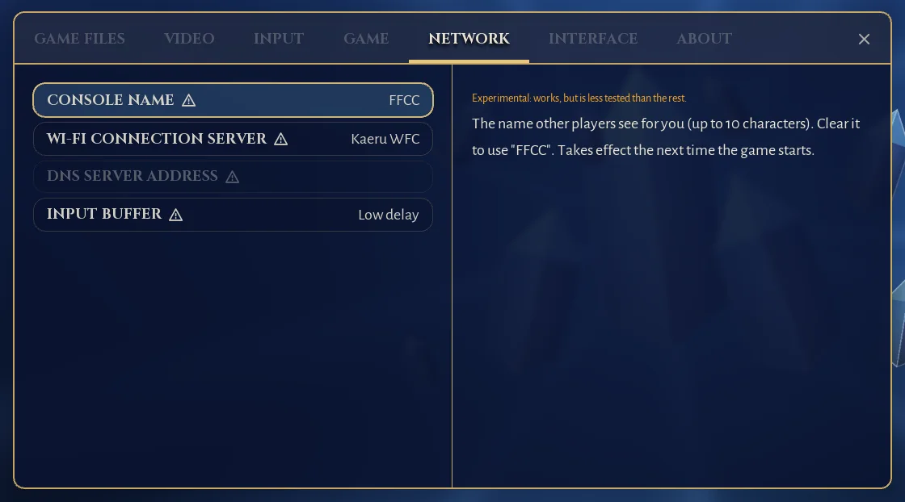

USA and Europe
Both the USA and the European game are supported, each checked by its SHA-1 and with its own save. A language setting picks English, French, German or Spanish text.
Alpha
A native PC port of the Nintendo DS game, made by statically recompiling it: the game's ARM code is translated to C and compiled on your PC, not emulated. Plug and play on Windows and Linux. You bring your own copy of the game; nothing of it is included.
See the releases page for the newest alpha.

Unzip the Windows package to a folder you can write to (not Program Files), or make the Linux
.AppImage executable and run it. Nothing else needs to be installed.
Pick your own dump of the game, or drop it on the window. It is checked, and the game is built on your PC with the compiler that comes in the package. That takes about a minute, once.
Choose a preset in the Welcome window (Enhanced is the recommended way to play) and press Play.
This project contains no game code or data. The USA and European versions are supported:
Final Fantasy Crystal Chronicles - Echoes of Time (USA) (En,Fr,Es).nds1df23d5a3a655bdd587c360b581202931d0f66e1Final Fantasy Crystal Chronicles - Echoes of Time (Europe) (En,Fr,De,Es).nds18f7004f74c83feba40f003641ec00571e52a301The Japanese version is not supported. See how the project stays clear of game data.
Both the USA and the European game are supported, each checked by its SHA-1 and with its own save. A language setting picks English, French, German or Spanish text.
The second screen is a touchable picture-in-picture. Or choose main + side, stacked, side by side, or a window of its own. Swap the screens at any time.
Up to 16x the DS resolution (4K and beyond), matched to your window, with nearest, linear and sharp scaling filters. The exact DS software renderer is kept as the reference.
Texture smoothing removes the blocky look of the DS textures and the jagged edges of sprites in 3D, and stable textures stop ground textures from warping.
The game draws its 3D at 30 fps. Frame interpolation shows it at 60 fps or at your display's refresh rate (144 Hz and more), with frame pacing for G-Sync and FreeSync displays.
16:9, 16:10, 21:9 and 32:9, with the health and magic bars at the screen edges, and resizable.
Full gamepad play with no touch screen needed, analog movement, a radial on the right stick to pick the spell element, rebinding, and button names for Xbox, PlayStation and Nintendo controllers.
Restored through the community Wi-Fi Connection revival servers (Kaeru WFC, WiiLink WFC or your own), plus local wireless between instances on one PC (Windows).
Skip the company logos, fast loading and saving, and an in-game settings menu with a Final Fantasy look that works with mouse, keyboard and gamepad. Two presets, Original and Enhanced, to start from.
Report an issue collects the version, settings, a recent log and a screenshot, with personal paths removed, and opens a prefilled GitHub issue.
Press F1 in the game, or R + Start on a gamepad. It works with the mouse, the keyboard and a gamepad, and the game keeps running behind it so online play stays in sync.



Screenshots show this project's own interface only; the game itself is not shown here.
This is an early build. It boots and plays from the title screen into the field, with sound, saves and online play, but it has been played through the opening areas, not the whole game. Please report problems from the in-game menu or on the issue tracker.
Features with a warning icon in the settings have had the least testing: widescreen and HUD placement, 3D at 60 fps and at your display's refresh rate, frame pacing, stable and smoothed textures, analog movement in multiplayer, and everything online.
The builds are unsigned, so Windows SmartScreen or an antivirus may warn about the program, and about the game
module it builds on your PC the first time (choose More info, then Run anyway). The whole source is
public, and the release lists checksums (SHA256SUMS.txt) so you can check your download.
The project includes no game code, art or sound: only the tools that turn your copy of the game into a PC program on your PC. Nothing generated from the game is ever published. The details are in docs/LEGAL.md. This is not legal advice.
Yes: make the AppImage executable (chmod +x) and run it. It needs glibc 2.35 or newer. On the Steam Deck,
run it from desktop mode. Local wireless between instances is not done on Linux yet.
Windows: %APPDATA%\FFCCEOT-Recomp\EchoesOfTime. Linux: ~/.local/share/FFCCEOT-Recomp/EchoesOfTime.
Put a file named portable.txt next to the program (next to the .AppImage on Linux) to keep
them in a data folder beside it instead.
Keyboard: arrow keys, X / Z / S / A for A / B / X / Y, Q / W for L / R, Enter and Right Shift for Start and Select, and the mouse as the stylus. A gamepad needs no touch screen. Every button can be rebound in the settings. F1 opens the menu, F2 swaps the screens and F11 toggles fullscreen. All the controls and hotkeys.
Use Report an issue in the in-game menu: it collects the version, settings, a recent log and a screenshot, with personal paths removed, and opens a prefilled GitHub issue. Or open an issue yourself.
The game's ARM code is translated to C ahead of time and compiled to native code, instead of being interpreted while you play. The rest of the DS (graphics, sound, wireless) runs on parts of the melonDS emulator. The architecture notes explain the details.